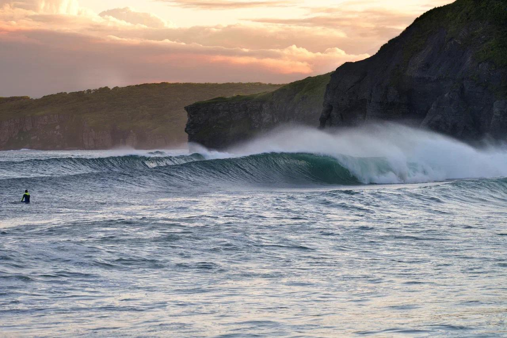
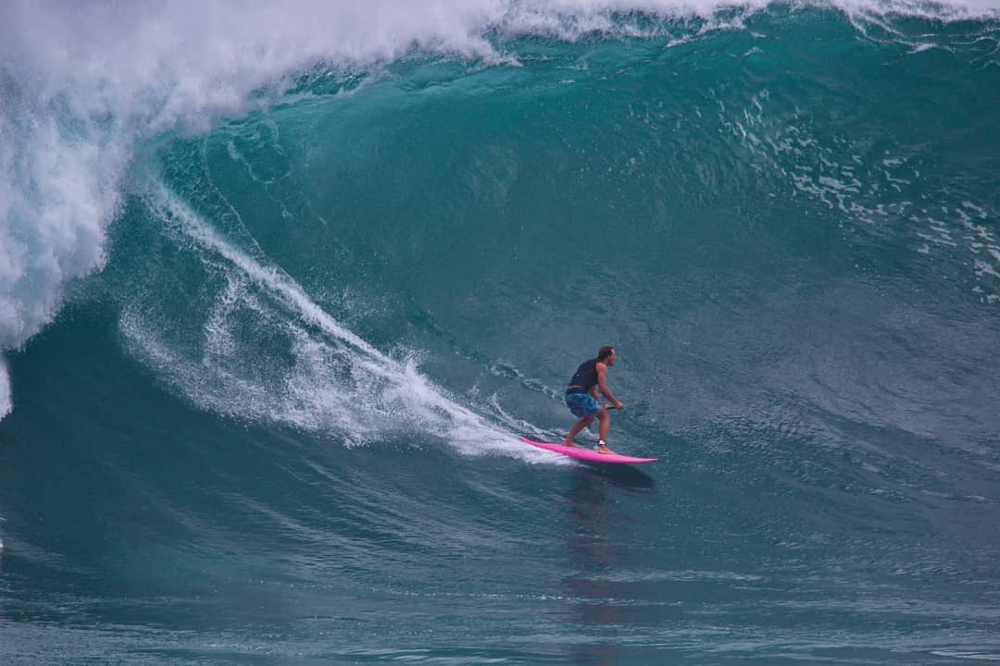

Серф-трип во Владивосток
Восемь дней, в которых сочетаются город, океан и работа с вниманием.
Получить программу
Восемь дней, в которых сочетаются город, океан и работа с вниманием.
Получить программу20 сентября — день заезда. Мы знакомимся с Владивостоком: смотрим на город с воды на SUP-бордах и с высоты, поднимаемся на фуникулёре, проезжаем по мостам на остров Русский.
Гуляем по старым кварталам, где когда-то находился китайский “город в городе”, пробуем местную кухню.
После этого выезжаем на побережье Японского моря в Хасанском районе — место, где заканчивается Россия и начинается Северная Корея.
Там мы проведём около пяти дней: будем жить в эко-резорте, в деревянных домах, с завтраками, баней и подогреваемым бассейном.
Фокус — на природе и воде: серфинг, сапбординг, снорклинг, морские прогулки, рыбалка и наблюдение за морскими котиками.
27 сентября возвращаемся во Владивосток, ужинаем, гуляем по вечернему городу и готовимся к вылету.
План гибкий: мы подстраиваемся под свелл и погодные условия.


Профессиональный серфер и коуч. Работает с взрослыми учениками, для которых серфинг — это не развлечение, а способ работы с вниманием и состоянием.
Комментирует темы серфинга и концентрации в медиа, включая Forbes и Men Today.

Стоимость: 125 000 ₽ при двухместном размещении
Включено:
Проживание с завтраками
Серфинг и сап с оборудованием
Морские прогулки и рыбалка
Все передвижения
Гидрокостюм 4/3 мм (или сообщить размер)
Удобную одежду для природы
Паурбэнк